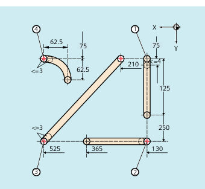
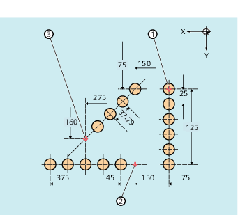

When punching or nibbling is activated, both SPP and SPN segment the total traversing section programmed for the path axes into a number of path segments with the same length (equidistant path segmentation). Internally, each path segment corresponds to a block.
When punching, the first stroke is realized at the end point of the first path segment; but for nibbling, at the starting point of the first path segment. Therefore the following numbers are obtained over the complete traversing section:
Punching: Number of strokes = number of path segments
Nibbling: Number of strokes = number of path segments +1
Auxiliary functions are executed in the first of the generated blocks.
SPP=...
SPN=...
| Size of path segment (maximum distance between strokes) | |
Effective: | Modal | |
| Number of path sections per block | |
Effective: | Non-modal | |
The programmed nibbling segments should be automatically split-up into path segments.
| Program code | Comment |
|---|---|
| N100 G90 X130 Y75 F60 SPOF | ; Positioning at starting point 1 |
| N110 G91 Y125 SPP=4 SON | ; Nibbling on; Maximum path segment length for automatic path segmentation: 4 mm |
| N120 G90 Y250 SPOF | ; Nibbling off; Positioning at starting point 2 |
| N130 X365 SON | ; Nibbling on; Maximum path segment length for automatic path segmentation: 4 mm |
| N140 X525 SPOF | ; Nibbling off; Positioning at starting point 3 |
| N150 X210 Y75 SPP=3 SON | ; Nibbling on; Maximum path segment length for automatic path segmentation: 3 mm |
| N160 X525 SPOF | ; Nibbling off; Positioning at starting point 4 |
| N170 G02 X-62.5 Y62.5 I J62.5 SPP=3 SON | ; Nibbling on; Maximum path segment length for automatic path segmentation: 3 mm |
| N180 G00 G90 Y300 SPOF | ; Nibbling off |
Automatic path segmentation should be made for the individual series of holes. The maximum path segment length (SPP value) is specified for the segmentation.
| Program code | Comment |
|---|---|
| N100 G90 X75 Y75 F60 PON | ; Position to starting point 1 ; Punching ON: single punch stroke at end of block (at starting point 1) |
| N110 G91 Y125 SPP=25 | ; Maximum path segment length for automatic path segmentation: 25 mm |
| N120 G90 X150 SPOF | ; Punching OFF; Positioning at starting point 2 |
| N130 X375 SPP=45 PON | ; Punching ON; Maximum path segment length for automatic path segmentation: 45 mm |
| N140 X275 Y160 SPOF | ; Punching OFF; Positioning at starting point 3 |
| N150 X150 Y75 SPP=40 PON | ; Punching ON; Punching ON, instead of the programmed path segment length of 40 mm, the calculated path segment length of 37.79 mm is used. |
| N160 G00 Y300 SPOF | ; Punching OFF; Positioning |
See also:
Path segmentation for path axes
Path segmentation for single axes